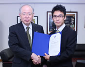

セミナーのお知らせ
2012 June 20
京都大学でピッツバーグ大学のRob Kass教授を囲んで行なうワークショップで発表をします．
Workshop on neural information flow
Tracking dynamic neural interactions in awake behaving animals
Hideaki Shimazaki, RIKEN Brain Science Institute
Neurons embedded in a network are correlated, and can produce synchronous spiking activities with millisecond precision. It is likely that these correlated activities organize dynamically during behavior and cognition, and this may be independent from spike rates of individual neurons. Consequently current analysis tools must be extended so that they can directly estimate time-varying neural interactions. The log-linear model is known to be useful for analysis of the correlated spiking activities but is limited to stationary data. In our approach, we developed a `state-space log-linear model’ that can estimate ever-changing neural interactions: this method is an extension of the familiar Kalman filter which can track system’s parameters as used in, e.g., automotive navigation systems. We applied this method to three neurons recorded from the primary motor cortex of a monkey engaged in a delayed motor task (data from Riehle et al., Science,1997). We found that depending on the behavioral demands of the task these neurons dynamically organized into a group which was characterized by the presence of higher-order (triple-wise) interaction. There was, however, no noticeable change in their firing rates. These results demonstrate that time-varying higher-order analysis allows us to detect subsets of correlated neurons that may belong to a larger set of neurons comprising a cell assembly.
This is a collaboration work with Shun-ichi Amari (RIKEN), Emery N. Brown (MIT), and Sonja Gruen (Julich). Original paper: Shimazaki et al., PLoS CB 8(3): e1002385
2012 Mar 29-30
「 ノンパラメトリック統計解析とベイズ統計」研究集会 題目 「ヒストグラム・カーネル密度推定の神経スパイクデータへの適用：理論と実践」 講演者 島崎秀昭（理化学研究所） 共著者 篠本滋（京都大学）
論文が出版されました．日本語プレスリリース 英語プレスリリース 独語プレスリリース (ヤフーニュース, マイナビ, ScienseDaily)
Shimazaki H., Amari S., Brown E. N., and Gruen S., State-space Analysis of Time-varying Higher-order Spike Correlation for Multiple Neural Spike Train Data. PLoS Computational Biology 8(3): e1002385. link 
こちらのページでも簡単な説明をしています。
2012 Feb 23-26
Cosyne12のアブストラクトがアクセプトされました．
Hideaki Shimazaki, Kolia Sadeghi, Yuji Ikegaya, Taro Toyoizumi, The simultaneous silence of neurons explains higher-order interactions in ensemble spiking activity. Computational and Systems Neuroscience (Cosyne) 2012. Salt Lake City, USA.
2011 Dec
解説論文が出版されました．
島崎秀昭. 対数線形モデルによるマルチニューロンスパイクデータ解析 日本神経回路学会誌 解説論文 2011年12月号 Vol18(4) 194-203 link pdf
2010 Sep 6-7 一時帰国して京都大学で開催されたワークショップで発表しました．
Shimazaki H. Detection of dynamic cell assemblies by the Bayes Factor. Workshop on spatio-temporal neuronal computation, Kyoto University, Japan
2010 Mar 日本神経回路学会第19回全国大会研究賞の研究概要 日本神経回路学会誌 2010年3月号掲載
JNNSのホームページからフリーでお読み頂けます.
2009 Dec 15 MITのブラウン研究室で研究を始めま した. この滞在は学術振興会 優秀若手研究者海外派遣事業 による支援を受けています.
2009 Sep 24-26 日
本神経回路学会 第19回全国大会
島崎秀昭・甘利俊一・Emery Brown・Sonja Gruen 動的スパイク相関の状態空間モデル 

この受賞により理化学研究所の野依良治理事長から感謝状を頂きました. ありがとうございました. 09/10/16
ISGS13: NEW MOnasson, Chakraborti (Finance, Indian?), H Zhou (feedback vertesx sets), Venue: Ohzeki, Muneki Yasuda (extension of TAP), Ohta (infectious desease, s QQ), Erik Orel (roudi),
Cosyne12: NEW Gasper Tkacik, POSTER: Yardan Cohen, Oren Forkosh, Dagmara Panas, Evans, Ian, Grego Orban Guillavwe Hennequin, Austin Brockmeier, Elad Ganomar, Schneidmann, Nicholas Price (room mate)
Cosyne11: NEW Biljena Petreska, Roger Herikstad, Stuart, Maryam, People who came to poster: Herikstad, Lars Busing, James Tudes, Ian, Fellipe,Taro, Kolia, Ken Shinsuke, Pietro, etc...
Neuro2010 Abeles, Terashima, Maxent
SAND5: New: Richard Naud(EPFL, gerstner), (from Israel) Michael Vidne, Alex Ramirez, Kolia (Paninski), Jan Potworowski(Kernel source density), Ian Stevenson, barani raman (Olfactory), Kurt Zhang(statiscian interestd in sync) Did not talk: Gerrett Stanley (great), WalterSchneider(commercial) Wei Wu, Mitra, Geman, Matthew Smith Already know: (Okatan, Sage, Wasim Coleman Haslinger Kolia)
COSYNE10: Kolia, Pietro, Arno, Adrian, Vikas, Poster: Shneidman, Snowboard: Mortiz, Ken, Shinsuke, Ernst, Kolia, Hideaki, David 小林徹也
塗屋君結婚式: Ikegayaさん, Okunoさん, 秋吉さん（maru）
People at Conferences:
12/15-24 Prash (share roo), 渡辺・高橋・さん(Hostel)
BSI Rtreat: 杉原さん Zenas 藤井さん
JNNS09: 滝山さん 角田さん
Cosyne09:
Visitors for poster: Kitayama, Ana V Cruz (UCL, London), Deep Gangulli (grad student in Simoncelli lab), Jonathan Shlens, John Cunnigham, Elad Schneidman, Gina Escobar, Philip Meier (in Reinagel lab UCSD, does LGN)
People met: Pietro, Mate, David N, Sage, Il Park, Rob, Godon, Eden, Obermeyer, Byron, Martin
NIPS08 Gatby Party: Hager
NIPS08 Byron Yu in Shenoy lab Vincent Q. Vu Weyth Bair 池 田思朗 池田和司 Berkes(Corpula) Rick Jenison
IBIS08 富 岡さん 井出 さん(IBM) 平山純一郎さん [矢入さん 吉田さん]（先端研） [広瀬さん 藤巻さん] (NEC) 杉 山さん(東工大） 田中さん(京大）
HIDEAKI SHIMAZAKI, Ph.D.